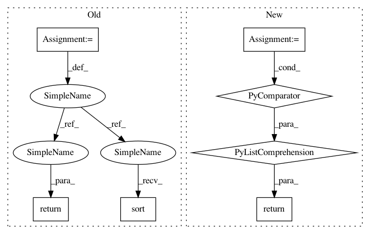

56f3eaf6f4b8a40fa5f04dde65c562b21327f69a,nilmtk/dataset_converters/redd/convert_redd.py,,_find_all_houses,#Any#,61
Before Change
def _find_all_houses(redd_path):
dir_names = listdir(redd_path)
house_ids = [int(directory.replace("house_", "")) for directory in dir_names
if directory.startswith("house_")]
house_ids.sort()
return house_ids
def _find_all_chans(redd_path, house_id):
house_path = join(redd_path, "house_{:d}".format(house_id))
After Change
-------
list of integers (house instances)
dir_names = [p for p in listdir(redd_path) if isdir(join(redd_path, p))]
return _matching_ints(dir_names, "^house_(\d)$")
def _find_all_chans(redd_path, house_id):
In pattern: SUPERPATTERN
Frequency: 3
Non-data size: 7
Instances
Project Name: nilmtk/nilmtk
Commit Name: 56f3eaf6f4b8a40fa5f04dde65c562b21327f69a
Time: 2014-07-02
Author: jack-list@xlk.org.uk
File Name: nilmtk/dataset_converters/redd/convert_redd.py
Class Name:
Method Name: _find_all_houses
Project Name: nilmtk/nilmtk
Commit Name: 56f3eaf6f4b8a40fa5f04dde65c562b21327f69a
Time: 2014-07-02
Author: jack-list@xlk.org.uk
File Name: nilmtk/dataset_converters/redd/convert_redd.py
Class Name:
Method Name: _find_all_chans
Project Name: TheAlgorithms/Python
Commit Name: c47c1ab03ce80963d5dcd2136d03555f3b283055
Time: 2019-05-16
Author: vargasnikolass@gmail.com
File Name: compression/huffman.py
Class Name:
Method Name: parse_file
Project Name: nilmtk/nilmtk
Commit Name: 56f3eaf6f4b8a40fa5f04dde65c562b21327f69a
Time: 2014-07-02
Author: jack-list@xlk.org.uk
File Name: nilmtk/dataset_converters/redd/convert_redd.py
Class Name:
Method Name: _find_all_houses